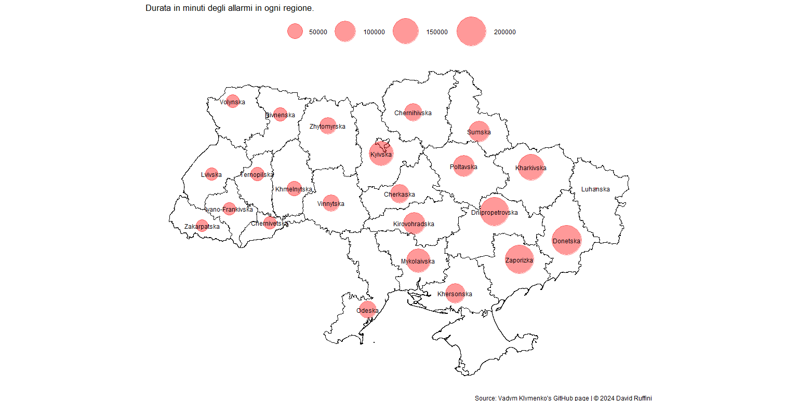
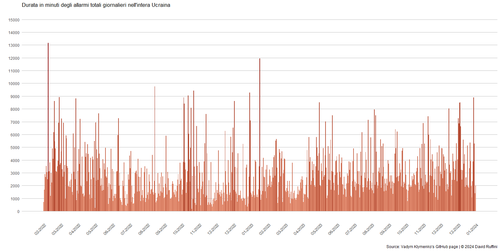
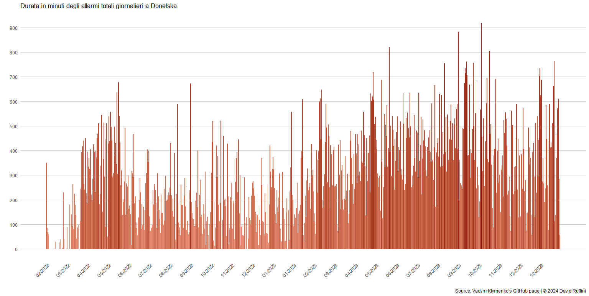
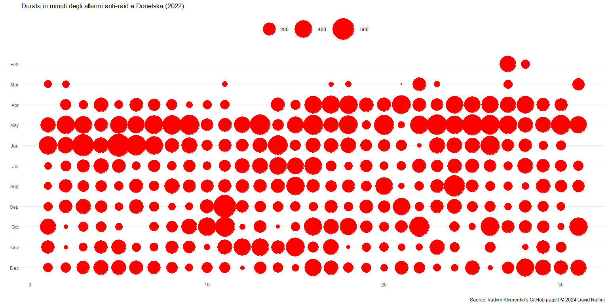
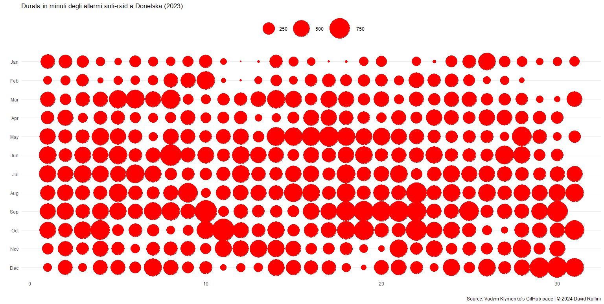
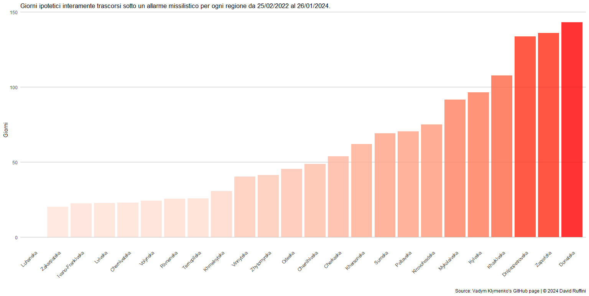

Quanto tempo della vita degli ucraini è stato vissuto sotto l’allarme di un attacco
Il 24 gennaio del 2022 la Russia invade l’Ucraina.
Il conflitto affonda le sue radici nel febbraio del 2014, quando in seguito all’Euromaidan, cioè una serie di manifestazioni filo-europee da parte degli ucraini, avvenne la destituzione del presidente pro-Russia Viktor Janukovyc.
Già dal 20 febbraio 2014 truppe russe, senza elementi di identificazione, varcarono i confini ucraini e occuparono temporaneamente la Crimea, dove un referendum, di cui la comunità internazionale non riconosce la legittimità, riconosce la Crimea come territorio della Federazione Russa.
Ad aprile dello stesso anno, forze separatiste filo-russe, con il sostegno finanziario e militare della Russia, hanno destabilizzato il Donbass, cioè l’area geografica che comprende gli oblast di Donetska e Luhanska. Anche qui è stata adottata la tecnica del referendum farlocco, con il fine di sostenere che è volontà degli abitanti di quelle zone far parte della Russia.
Gli scontri nel Donbass hanno provocato la perdita di circa 45000 ucraini, dove più del 15% erano civili.Il 24 gennaio del 2022 la Russia invade l’Ucraina.
Il conflitto affonda le sue radici nel febbraio del 2014, quando in seguito all’Euromaidan, cioè una serie di manifestazioni filo-europee da parte degli ucraini, avvenne la destituzione del presidente pro-Russia Viktor Janukovyc.
Già dal 20 febbraio 2014 truppe russe, senza elementi di identificazione, varcarono i confini ucraini e occuparono temporaneamente la Crimea, dove un referendum, di cui la comunità internazionale non riconosce la legittimità, riconosce la Crimea come territorio della Federazione Russa.
Con un salto in avanti di otto anni, arriviamo al 2022 e all’attacco su vasta scala della Russia nei confronti dell’Ucraina. Durante l’inizio dell'anno le truppe russe vengono ammassate al confine ucraino, giustificandosi con delle esercitazioni.
Dopo aver bombardato alcune città vicine al confine, il 24 febbraio del 2022 inizia l’attacco su larga scala, dove l’esercito, fino a quel momento fermo al confine, penetra nel territorio ucraino e i bombardamenti iniziano a devastarne le città.
Tre sviluppatori ucraini, tra cui Vadym Klimenko, hanno raccolto i dati relativi agli allarmi degli attacchi aerei attraverso l’app che li segnala. Le analisi successive sono basate su questi dati.

Mappa degli allarmi anti-raid missilistici.
Gli allarmi che hanno una durata maggiore, indicando una più elevata pericolosità della zona, sono quelli più vicini ai confini russi, specialmente le regioni di Donetska, Zaporiska, Dnipropetrovska e Kharkivska.
Durata in minuti degli allarmi anti-raid in ogni regione.
Nello specifico, nella regione di Donetska si è stati sotto allarme per più di 200000 minuti: in termini giornalieri, è come dire che questa regione, in meno di due anni, sia stata per quasi 140 giorni incessantemente sotto la sirena di un attacco imminente.
Considerando anche l’elemento temporale, dal febbraio del 2022 a oggi l’intensità media degli allarmi è rimasta quasi completamente costante, ma sarebbe opportuno verificare cosa succede per ogni singola regione.

Durata degli allarmi anti-raid in tutta l'Ucraina per ogni giorno.
Osservando i dati relativi esclusivamente a Donetska, il trend sembra invece aumentare. Come visto in precedenza, la vicinanza alla Russia sembra aumentare il rischio di un attacco.

Durata degli allarmi anti-raid nella regione di Donetska per ogni giorno.
Nella regione di Donetska il rischio, secondo gli allarmi, è aumentato. Il grafico relativo al 2023, già apparentemente più denso di allarmi, ha richiesto un necessario cambio di scala dato il grande aumento della durata degli allarmi.

Durata degli allarmi anti-raid nella regione di Donetska nel 2022.

Durata degli allarmi anti-raid nella regione di Donetska nel 2023.
Ciascun cittadino ucraino ha speso in media 1352 ore sotto un allarme missilistico, in altri termini, significherebbe esserlo stato interamente per 56 giorni, quindi quasi due mesi di vita in un bunker, nei sotterranei della metropolitana o in un qualsiasi altro rifugio.
La regione di Donetksa sembra quella più a rischio di un eventuale attacco. Infatti, in media, un suo cittadino ha trascorso 140 giorni interamente sotto il suono delle sirene.

Durata in giorni degli allarmi anti-raid in ogni regione.
Ciao!
Mi chiamo David, sono uno studente di Statistica e in questo sito raccoglierò le mie analisi su argomenti che trovo di mio interesse.
I motivi principali che mi hanno spinto a pubblicare le mie ricerche sono il voler dare ordine a ciò che prima vagava solamente tra le cartelle del desktop e condividere con gli altri i risultati delle suddette indagini.
Se siete in disaccordo, riconoscete un mio errore o per qualsiasi altro motivo volete scrivermi, potete contattarmi nei canali che ho messo in fondo alla pagina.